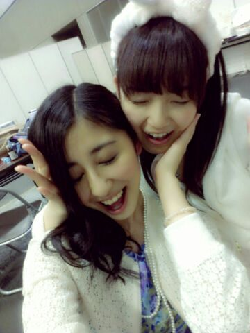
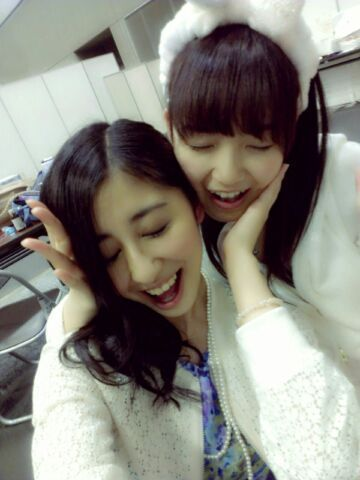

| 2013/04 21 Sun | ひめたん(*>ω<*)そ の286 |
京都全握行ったよーて方！
ありがとうございました！
ごめんなさいひめたん途中参加になりました(´;ω;`)
パフォーマンスなんかは
もうっ精一杯頑張りました(´;ω;`)(´;ω;`)(´;ω;`)
今日は5th最後ってことで
京都で締めくくれてよかったです！
みんなでお揃いのブレスレットでねっ
＊セトリ＊
君の名は希望
13日の金曜日
ロマンティックいか焼き
シャキイズム
君の名は希望
乃木坂の詩

明日も京都てこーとーで
今日はお泊まりです\( * )/
明日も頑張るぞー！
今日はちょっと違う髪でしたーん
ポニテくるくるでしたー
写め撮ってないごめんねー...
あんの、運営ブログでよかったら
確認してみてねー
とうとうステージに今野さん登場したね！笑
ちょっと把握していてほしいのが
多分来週からしばらく
ブログで何か不具合が生じるかもです(´・ω・｀)
ごめんね;;;
それでも変わらず読んでくれたら
もうみんなのこと大好きになっちゃうぞー♪
ありがとうございました！
ごめんなさいひめたん途中参加になりました(´;ω;`)
パフォーマンスなんかは
もうっ精一杯頑張りました(´;ω;`)(´;ω;`)(´;ω;`)
今日は5th最後ってことで
京都で締めくくれてよかったです！
みんなでお揃いのブレスレットでねっ
＊セトリ＊
君の名は希望
13日の金曜日
ロマンティックいか焼き
シャキイズム
君の名は希望
乃木坂の詩

明日も京都てこーとーで
今日はお泊まりです\( * )/
明日も頑張るぞー！
今日はちょっと違う髪でしたーん
ポニテくるくるでしたー
写め撮ってないごめんねー...
あんの、運営ブログでよかったら
確認してみてねー
とうとうステージに今野さん登場したね！笑
ちょっと把握していてほしいのが
多分来週からしばらく
ブログで何か不具合が生じるかもです(´・ω・｀)
ごめんね;;;
それでも変わらず読んでくれたら
もうみんなのこと大好きになっちゃうぞー♪

 テニスはテニスでも
テニスはテニスでも
「ソフトテニス」と言う競技知ってる〜？
そふてに(・∀・)
違いはよーわからんけど、とりあえず
中学にソフトテニス部あったよー
ボールの堅さ？
せいらりん推しなんだけど、
最近ひめたんビームにやられたから
握手会行ってもいいかなぁ？
大歓迎よ！
ほんとはらりんに許可とってほしいとこだけど
多分だめって言うわな(ω)
じゃらりんに内緒でおいでませっ☆！
ひめたんのパフォーマンスって細かい所まで、
魅せる事に気を使ってるように思うんだけど、
一番気を使ってる所はどんな所？
これはよく言ってることだけど
「ライブ感」を大事にするように
心がけてはおりますよ( ^ω^ )
夏に良く飲む飲み物は物はある？
いちご・おれ！
ひめたんがゲスト出演してみたい番組は
何かありますか？？
めざましじゃんけんしたいなー
朝はやいんかなー頑張って起きよかなー！
ひめたんが好きなキャラクターは？
ジャッキー以外で
好きなキャラクターとかありますか？
ジャッキーちゃん以外かー(´・ω・｀)
最近はマイメロちゃんとかかな＊
マイメロちゃんグッズ何気に身につけてるよー
ひめたんが好きなパンは??
最近はどんな菓子パンにハマっていますか？
チョコクロ*\(^^)/*
メロンパンはあんま好きくないって言ったら
へーなんか意外って言われた←
これから塾です。ぜひ元気が出る言葉を下さい
塾！わー塾か！
夜の塾はちょっと体力的に堪えるものが
あったりするよね(´;ω;`)
塾終わったら美味しいもの食べなさいねー
きっと夜なんだろうけどね☆あたしが許すよ☆
てなわけで
明日も京都でお会いしましょう！
いけないよーて方は
京都会場からお土産投げるね\^^/
(＊´・ω・＊)
コメント(193)
2013/04/21 00:00